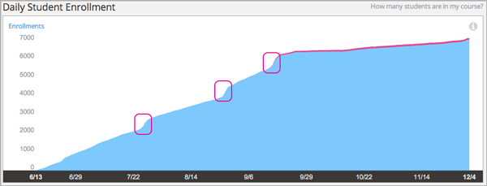
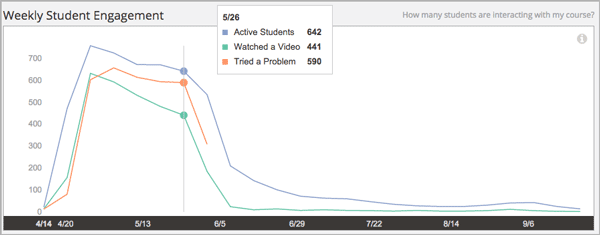
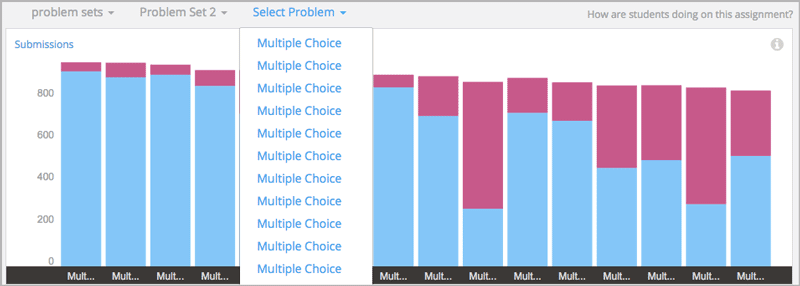
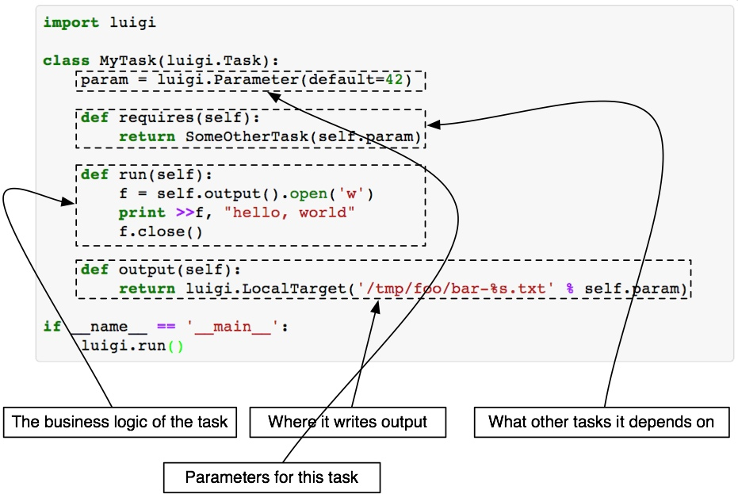
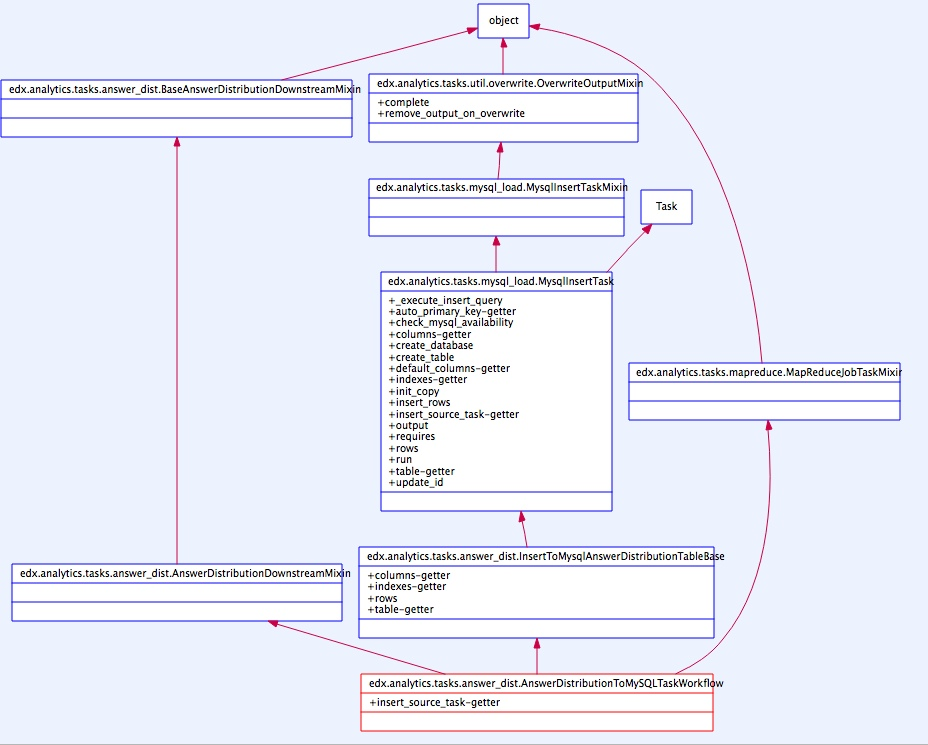
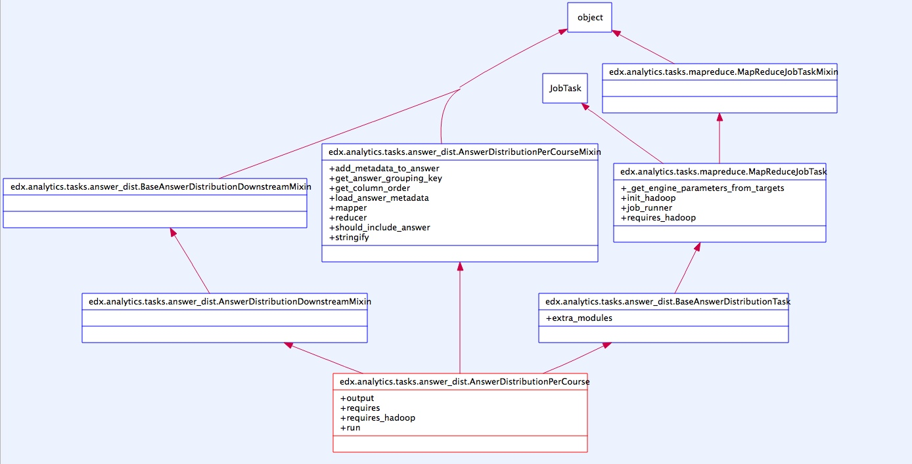

提供机制，而不是策略 --《Unix编程艺术》
edx-analytics-pipeline是什么鬼
它这样自我介绍：
The Hadoop-based data pipeline.
edx-analytics-pipeline是edx数据分析和可视化的成员组件之一，主要的功能是从track log中挖掘信息。数据挖掘的业务逻辑，都在这个源码库里，接受track log作为输入,（关于track log，可以参看我此前的这篇文章）,从中提取信息，输出结果到mysql中。至于数据的呈现，主要是edx-analytics-dashboard的职责。
我在基于docker的edx数据分析 提到，我用docker打包了edx-analytics-pipeline相关的依赖，利用它可以从track log中提取信息，可以分析出
- 每周课程活跃情况
- 各项答案分布情况
- 课程注册情况报表
- ...
如果你同时安装好了insights，那么将看到以下效果




更多可视化呈现结果请看这里
为何需要深入源码
我们看到对学生观看视频之类的行为，虽然track log里有记录原始数据(tracking_logs)，可目前的官方进度还没走到这里，尚未对此做出分析,就是说这些数据需要我们自己去挖掘，那么有兴趣的小伙伴们，就需要理解edx-analytics-pipeline的源码，从而能够自己去挖掘track log里丰富的信息。可以玩出的花样，取决于你的想象力
其实，不少课程团队都会有各种动机去分析课程所产生的数据。而且这些数据的用途，和产生的价值很可能超出平台设计者的想象，那么edx在此做的很棒的工作便是，不去自作聪明地假定了解用户的需求，而是开放了数据，把分析的工作交由平台的使用者
切入点
我们从一个案例开始。
在安装好依赖后，我的第一个分析工作是从tracking log中提取出学生答案的分布情况
也就是这条指令：launch-task AnswerDistributionToMySQLTaskWorkflow [options]
跟踪这条指令，弄懂它是如何被执行的，我们就能对edx-analytics-pipeline的设计和逻辑流有个大体上的认识，之后的hack和定制就会容易许多。
launch-task
首先关注launch-task,如果你有写过python库，很容易看出launch-task是一个command-line tool，可以在setup.py的entry point里找到它。
于是我们找到launch-task = edx.analytics.tasks.launchers.local:main
于是顺藤摸瓜，找到了入口函数
def main():
# In order to see errors during extension loading, you can uncomment the next line.
logging.basicConfig(level=logging.DEBUG)
# Load tasks configured using entry_points
# TODO: launch tasks by their entry_point name
stevedore.ExtensionManager('edx.analytics.tasks')
configuration = luigi.configuration.get_config()
if os.path.exists(OVERRIDE_CONFIGURATION_FILE):
log.debug('Using override.cfg')
with open(OVERRIDE_CONFIGURATION_FILE, 'r') as override_file:
log.debug(override_file.read())
configuration.add_config_path(OVERRIDE_CONFIGURATION_FILE)
else:
log.debug('override.cfg does not exist')
# Tell luigi what dependencies to pass to the Hadoop nodes
# - boto is used for all direct interactions with s3.
# - cjson is used for all parsing event logs.
# - filechunkio is used for multipart uploads of large files to s3.
# - opaque_keys is used to interpret serialized course_ids
# - dependencies of opaque_keys: bson, stevedore
luigi.hadoop.attach(boto, cjson, filechunkio, opaque_keys, bson, stevedore, ciso8601)
# TODO: setup logging for tasks or configured logging mechanism
# Launch Luigi using the default builder
with profile_if_necessary(os.getenv('WORKFLOW_PROFILER', ''), os.getenv('WORKFLOW_PROFILER_PATH', '')):
luigi.run()
啊哈，从中我们发现launch-task无非是对luigi的封装，主要加入了日志记录和配置文件。
之后我们会发现，对luigi的熟悉程度根本上决定了我们能做的定制深度。
而业务逻辑，便是写在luigi的task类中run函数里（多数时候是 JobTask 里的mapper和reducer函数）
这个过程颇像rpg，一边前进一边获得新的线索，而每条新的线索又构成你前进的路标。
希望你最后能从锁妖塔救出灵儿 ：）
好啦游戏现在有了支线剧情，我们要了解下luigi是什么鬼。
在我了解了luigi是什么鬼后，战斗力简直+1000（此处应该有动态闪光效果），在不熟悉luigi之前，launch-task的许多怪癖我根本无从理解，好比任务的幂等性，他喵的，我在这个问题上纳闷了许久，对着不能理解的任务产出无从下手。
luigi
什么鬼
Luigi is a Python module that helps you build complex pipelines of batch jobs. It handles dependency resolution, workflow management, visualization etc. It also comes with Hadoop support built in.
luigi的目的是解决所有管道问题，通常与长时间运行的批处理任务相关。像Hadoop作业啦，dumping数据到数据库啦，运行机器学习算法啦，数据分析啦之类的
edx-analytics-pipeline将luigi用于数据分析。当数据量很大，任务复杂的时候，luigi就显示出优越性了。luigi的几个特性此时很有帮助，诸如处理task依赖问题，保证所有关于文件系统的操作的原子性，后者意味着流程不会因为包含不完整数据而导致运行时崩溃。
它还带有web界面，可以看出任务的执行状态，和依赖关系
Quick Start
import luigi
class MyTask(luigi.Task):
x = luigi.IntParameter()
y = luigi.IntParameter(default=45)
def run(self):
print self.x + self.y
if __name__ == '__main__':
luigi.run()
python my_task.py MyTask --local-scheduler --x 123 --y 456
核心概念
luigi有三个核心概念：
- Task:抽象类，任务逻辑运行的地方，提供了一些方法来定义任务的逻辑行为。主要有run, output, requires
- Target:抽象类，我把它理解为类文件句柄。一般对应为磁盘上的文件，HDFS上文件或数据库等.一般开箱可用的LocalTarget和hdfs.HdfsTarget就够用了，很少需要自己写
- Parameter：用于控制job的运行
下边这幅图很好地说明了三者的关系 
注意事项
- luigi需要依赖于外部的调度器来触发工作流，如crontab等
- 配置：当前工作目录下的client.cfg优先级高于 /etc/luigi
- luigi任务的输出都将被无限期地保存。这点的好处就是当后面的任务失败时，在重跑失败任务时可以重用前面任务的输出，而不需要重跑前面的任务。不好的地方在于，将会有大量的中间结果保存在系统上，一个比较有用的建议就是把这些输出保存在一个特定的目录中，并进行定期地清除。
- 一个常见的用例是每晚要运行一个Hadoop任务，但有时因为各种原因该任务会失败。一个有用的模式就是在最后建立一个虚拟任务，仅需声明依赖于最近一天实际真正的任务。
更多细节
AnswerDistributionToMySQLTaskWorkflow
UML类图如下（使用Understand分析的结果）

顺着UML类图走一遍，容易发现AnswerDistributionToMySQLTaskWorkflow从父类中继承的多是一些我们不关心的特性。
我们的兴趣在于统计答案分布的的task，业务代码是那里实现的呢？找到业务逻辑的实现的话，我们就能够自己定制了
容易发现AnswerDistributionToMySQLTaskWorkflow类中的唯一方法insert_source_task中的AnswerDistributionPerCourse便是关键
insert_source_task的doc string写的很清楚了
Write to answer_distribution table from AnswerDistributionTSVTask.
AnswerDistributionPerCourse 便是产生 answer_distribution的地方。
我们接着去看下的AnswerDistributionPerCourse UML类图

根据我们先前学习luigi的知识，知道继承JobTask的类往往会自己实现业务逻辑，关键方法就是mapper和reducer，通过观察UML类图发现，具体的实现被移到AnswerDistributionPerCourseMixin中，至于为何这样做，如果你熟悉Python的话，会发现使用Mixin来实现多态是Python社区的惯用做法
至此，我们已经知道怎么编写自己定制的业务逻辑了，重写一个Mixin类去实现业务逻辑就好了呀！
options
最后扫尾一下，关于在文档不足的情况下，如何了解函数的用法，好比，我们怎么知道launch-task AnswerDistributionToMySQLTaskWorkflow [options]中的[options]有哪些可用的选项。看测试用例呀
def test_answer_distribution_mysql(self):
self.task.launch([
'AnswerDistributionToMySQLTaskWorkflow',
'--src', self.test_src,
'--dest', url_path_join(self.test_root, 'dst'),
'--name', 'test',
'--include', '"*"',
'--manifest', url_path_join(self.test_root, 'manifest.txt'),
'--base-input-format', self.INPUT_FORMAT,
'--lib-jar', self.oddjob_jar,
'--n-reduce-tasks', str(self.NUM_REDUCERS),
'--credentials', self.export_db.credentials_file_url,
])
就酱吧